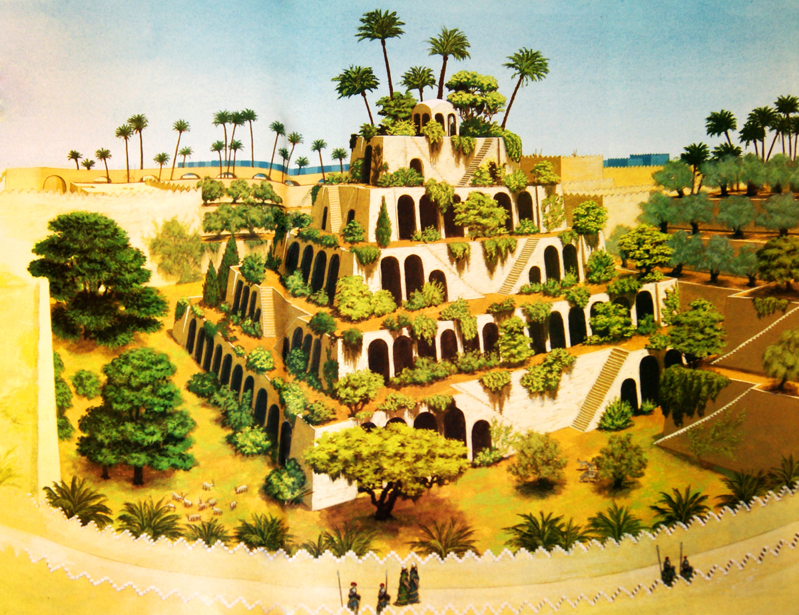

Semiramidanın (Babilin) asma bağları — qədimdə "dünyanın yeddi möcüzəsi"ndən biri sayılırdı. Semiramidanın asma bağları qədim Şərqin ən böyük və zəngin şəhəri olan Babildə idi. Əfsanəyə görə, bu bağlar Assuriya məlikəsi Semiramidanın əmri ilə yaradılmışdı. Əslində isə bu bağların yaradılmasını e.ə. VII əsrdə padşah Navuxodonosor əmr etmişdi. Qaynaqlarda göstərilir ki, bu hökmdar çox müstəbid olub. Məlumdur ki, müstəbidlər hamıya qarşı olmasa da, ayrı-ayrı adamlara qarşı nəcib hərəkətlər ediblər. O, Midiya şahının qızı Semiramida ilə evlənir. Onu Babilə gətirir. Həddən artıq sevir. Lakin Semiramida toz-torpaqlı Babildə təmiz havaya, yarpaq xışıltısına həsrət qalır. Bunu hökmdar da hiss edir. Ancaq o, öz paytaxtını Midiyanın yaşıl təpələrinə köçürmür. Heç kimin görə bilmədiyi işi görür. Midiyanın zümrüd meşələrinin ətrini qədim vadinin mərkəzinə gətirir. Məlikənin - Semiramidanın şərəfinə salınan bu bağların gerçəkləşməsi üçün şahlığın bütün qüvvələri hərəkətə gətirilir. Dövrün təcrübəli inşaatçıları, mühəndisləri bu işə cəlb olunur. Hökmdar dünyada ilk dəfə olaraq möhtəşəm məhəbbət abidəsi yaradır. Salınan Bağlar “Semiramida bağları” adı ilə məşhurlaşır və tarixin yaddaşında daşlaşır. Lakin yaddaşlarda, hafizələrdə qalan və dillərdə dolaşan bir fikir də var ki, məlikə öz adını daşıyan bu qəsrdə heç vaxt yaşamayıb.
